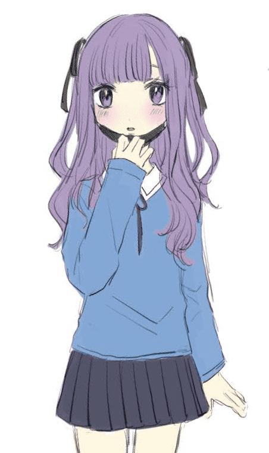
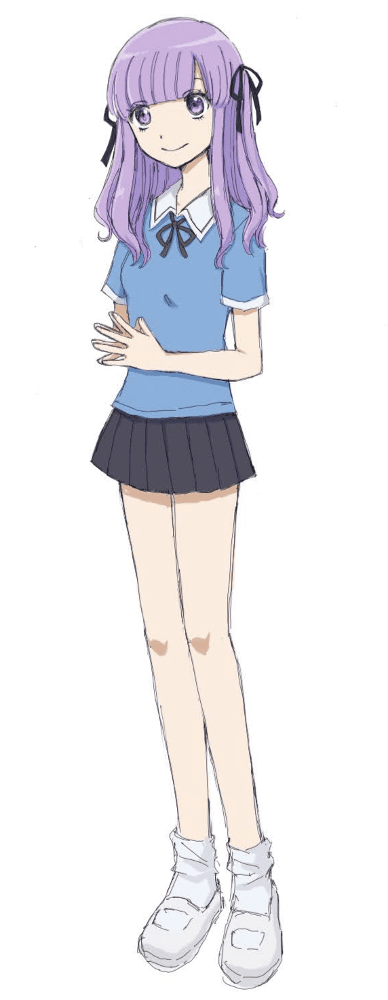

- ⇐TOP
夢主を考える過程が書かれた記事を見つけたので、触発されて書きました。
まず初めに、私は悠人と同級生の絡みが見たすぎるので、夢主は箱根学園１年生で決定です！
入学初日の話をパッと思いついたので、同じクラスでいこうと思います。
次に外見を考えます。推しのタイプそうな顔を想像しながら絵を描いていきます。原作の世界観に合った感じにするとか、原作のキャラと色合いや髪形が被らないようにするとかも意識しています。
↓第1案

最初は悠人のお面要素を入れたいと思って、いつも黒マスクを付けてる地雷系女子を考えてたんですが（マスク取ったほうが可愛いじゃんって言ってくれる悠人、キュンです）
いつもニコニコしてて悩みがなさそうな雰囲気にしたかったので、髪形はそのままで顔をあのお面に似せるという方向になりました（え？）
↓第2案

名前はビジュに合わせて考えます。
髪の色を紫にしたので、下の名前はゆかりちゃんに決定です！可愛さが増すのでひらがなで。
苗字には藤を入れたい。推しと同じクラスなら出席番号前後にしたいので進藤か須藤に絞られるんですが、語感で須藤ゆかりちゃんに決定です！
私立で、自転車部の強豪校である箱根学園に女の子が通ってるって何かしらの理由がありそうですが、
ここは単純に生まれも育ちも箱根町で、家が近いって理由で通ってることにします。
調べたら箱根町の人口って１万人しかいないんですね！？レアすぎる
大学は絶対都内がいいって思ってて、バイト頑張ってる感じだとけなげで可愛い。
夢主の性格を考えるときは基本的には推しの性格に寄せつつ、ちょこちょこ正反対な要素を入れる感じにしています。
似せる要素：可愛いもの好き、飄々としてる、目標達成のために努力してる
正反対な要素：Ｍ寄り、仲のいい妹がいる みたいな…
皆さんがどういうこと考えながら夢主を生み出してるのかめっちゃ気になります！